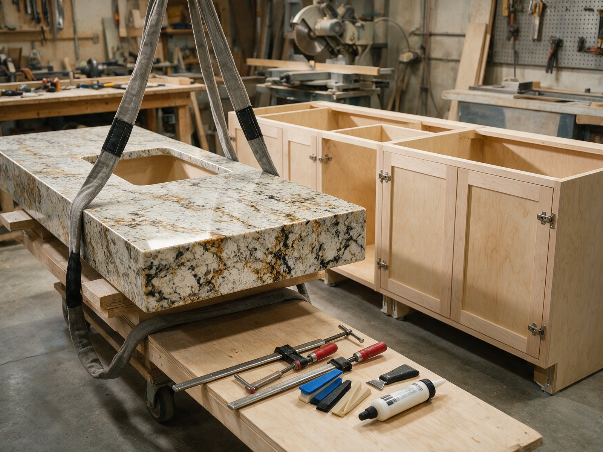

By the Editorial Team | Published: September 2026 | Last Updated: September 2026
What Has to Be Ready Before the Fabricator Delivers
Installation day is the culmination of everything the planning phase set up. The stone has been cut, finished, and loaded on the delivery truck. The installers arrive with the finished pieces, and their job is to place them into position, dry-fit for final adjustment, bond them into place, and finish any on-site touches. What determines whether installation day goes smoothly is the preparation that happens in the days before delivery. Ready sites produce clean installations; unready sites produce delays, damage, or compromises. This walkthrough covers what needs to be ready when the installers arrive and what the installation process actually looks like.
Installation day errors are among the most expensive kinds of stone project errors because they can damage material that has already had significant fabrication investment put into it. A crack from an impact during placement, a fit problem discovered at installation, a damaged edge from careless handling can all set a project back by days or weeks while replacement material is fabricated. Careful preparation and clear sequencing prevent most of these errors.
Site Preparation Checklist
The fabricator should specify exactly what site conditions they need for a smooth installation. Most reputable shops send a written checklist a week before installation covering the specific requirements. Homeowners benefit from reviewing this checklist against their site's actual state and addressing any gaps before installation day.
- Cabinets installed and structurally sound: the counter has to sit on stable cabinetry. Any cabinet still being modified or adjusted needs to be finished before the counter installation.
- Cabinets level within tolerance: cabinet tops should be level within about 3 millimeters across the run. Significant unlevelness requires shimming before the counter can be installed cleanly.
- Plumbing rough-in complete: the water supply and drain lines should come through the cabinet at the correct positions. Adjusting plumbing after the counter is installed is difficult and can damage the counter.
- Sink on-site or ready for install: for undermount sinks, the sink usually gets bonded to the counter during installation. The sink needs to be at the site at installation time.
- Cooktop and any appliances that intersect with the counter on-site: for accurate final positioning, appliances that share the counter cutout should be available for dry-fitting.
- Path from delivery vehicle to kitchen clear: large stone pieces are heavy and awkward. The path needs to be wide enough and clear of obstacles.
- Working space around the installation area: the installers need room to maneuver pieces into position without damaging surrounding surfaces.
- Power available for tools: installers may need power for adjustment tools, sink attachment, or on-site finishing work.
Sequencing With Other Contractors
Installation day rarely happens in isolation on a renovation project. Other contractors (plumber, electrician, tile installer, painter) may have work that comes before or after the counter installation, and the sequencing matters.
Typical sequencing places the counter installation after cabinetry, plumbing rough-in, and electrical rough-in are complete, and before tile backsplash installation, final plumbing connections, and painting touch-ups. Getting this sequence right avoids conflicts: installing the counter before cabinets are done means the cabinets may still be adjusted after the counter is bonded; installing tile backsplash before the counter means the tile may not align with the counter surface correctly.
Coordination between the general contractor and the fabricator is essential. A general contractor who tries to compress the schedule by skipping steps or overlapping work produces installation-day problems. Homeowners on renovation projects benefit from confirming the sequencing at planning time and holding the contractor to it.

Delivery Logistics
The delivery itself is a small logistical operation. A residential kitchen's worth of stone pieces typically weighs 200 to 500 kilograms total, divided across 2 to 6 pieces depending on the layout. The pieces arrive on a specialized delivery truck with a lift-gate or crane, and the installation crew unloads them and carries them into the kitchen.
The path from the truck to the kitchen is a specific concern. Doorways need to be wide enough to accommodate the pieces, and stairs need clearance for the piece geometry. Very long pieces sometimes cannot navigate certain doorway configurations and require alternative entry paths (through a French door, over a temporary access from a deck, or in the extreme case, through a temporarily removed window). The fabricator surveys the delivery path during measurement to identify any issues early.
Timing Considerations for Delivery
Deliveries typically happen in the morning to allow the full installation day for placement, bonding, and cure time. The installation crew arrives with the pieces and works through the day, typically finishing by mid-afternoon with the pieces bonded and the seams beginning their cure. The counter is usually usable within 24 to 48 hours of installation once the bonds have fully cured.
On-Site Dry-Fit
Once the pieces are in the kitchen, the installers position each piece on the cabinetry and check the fit before bonding. This dry-fit step verifies that the measurements were correct and that no surprises have appeared. Small adjustments (shim positions, minor edge shaping) get handled at this stage before the pieces are permanently bonded.
The dry-fit is the last opportunity to catch fit problems. If a piece does not fit correctly, the options at this stage are: modify the piece slightly on-site (grinding, edge shaping), reject the piece and pull it back to the shop for re-cutting, or accept a compromise fit that will have to be caulked or trimmed to hide. None of these options is ideal; catching fit problems at dry-fit is much better than discovering them after the piece is bonded.
What Homeowners Should Look for at Dry-Fit
- Overall alignment: pieces sit correctly on the cabinets without gaps at the walls.
- Seam alignment: at multi-piece installations, the seam positions should match the approved layout.
- Cutout alignment: sinks, cooktops, and faucet holes should be positioned correctly.
- Edge finish: the edge profile should be consistent and clean around all visible edges.
- Any visible defects: chips, cracks, or finish problems that should have been caught in fabrication.
Homeowners who are present at dry-fit and actively looking at these items catch issues that installers might not notice or might not flag. This attention pays off in installation quality.
Bonding and Seam Finishing
After dry-fit approval, the installers apply structural adhesive to the cabinet tops and bed the counter pieces into position. This adhesive holds the counter to the cabinetry and prevents movement or lift. Once the pieces are set, any seams between pieces are bonded with color-matched epoxy fill.

Seam bonding is precision work. The installer applies epoxy to the joint, works it into the seam so no voids remain, and screeds the excess flush with the surrounding surface. The epoxy begins curing within minutes and reaches structural strength within 24 hours. The seam should not be disturbed during this cure time.
Sink installation happens during or after the counter bonding. Undermount sinks are attached to the underside of the counter with adhesive and mechanical clips. Top-mount sinks are dropped into the cutout and sealed with silicone caulk around the flange. The specific attachment method depends on the sink type and manufacturer specifications.
Final Finish and Cleanup
Once the counter is bonded and the sink is installed, the installers do final finishing work. This includes: cleaning excess adhesive from visible surfaces, applying the initial seal to the counter surface (for natural stone that needs it), caulking the interface between the counter and the wall, and cleaning up any dust or debris from the installation process.
The homeowner benefits from doing a final walk-through with the installer at the end of the day. This walk-through covers the finished result, any care instructions specific to the stone and finish, the cure timeline for full use, and any warranty information. Reputable installers do this walk-through as standard practice; homeowners who are given only a receipt at the end should ask for the walk-through explicitly.
Frequently Asked Questions
How long is the counter unusable after installation?
Bonded seams typically cure to full strength within 24 hours. The counter can be lightly used within a few hours of installation but should not have heavy loading or spills for the first 24 hours. Full use returns after the cure period. Some sealers require longer cure times before spill exposure; the fabricator specifies the timeline for the specific material.
Can appliances be installed on the same day as the counter?
Cooktops that drop into a counter cutout can typically be installed the same day, once the counter bonding has begun to cure. Wall ovens and refrigerators that are separate from the counter can be installed any time after the counter is in place. Sinks are typically installed as part of the counter installation.
What happens if a piece is damaged during installation?
Depends on the damage. Small edge chips can often be repaired on-site with color-matched epoxy that reads as invisible after cure. Larger damage (significant cracks, corner breaks) usually requires the piece to be replaced, which means pulling the piece back to the shop for re-fabrication and rescheduling the installation. This is the reason careful handling matters.
Do the installers move existing counters or handle demolition?
Depends on the fabricator's service scope. Some fabricators include removal of the old counter as part of the installation service. Others require the old counter to be removed by the homeowner or a separate contractor before the installation date. Confirming this at contract signing avoids day-of confusion.
How much noise and mess does installation produce?
Moderate. Any on-site cutting or grinding produces stone dust that requires cleanup. Bonding and adhesive work produces minimal noise but some odor from the epoxy chemistry. The installers typically dust and clean the work area at the end of the day, but the homeowner may want to clear any nearby soft furnishings or valuables from the area during the installation.
Can the homeowner request specific installers?
Sometimes, at the fabricator's discretion. Reputable shops have specific installation crews that they trust with their work, and they typically assign whichever crew is available. Homeowners who have had good experiences with a specific crew can ask to have them assigned again for future work; the shop may or may not accommodate depending on scheduling.
What warranty typically applies to the installation?
Most fabricators warrant installation workmanship for 1 year and cover any installation-related problems that appear in that window. Structural failures of the stone itself (cracks that develop after installation) may or may not be covered depending on cause; if the failure results from installation error (missed support, over-tightening) it is covered; if from external cause (impact, thermal shock) it may not be. Reading the warranty terms at contract signing clarifies the coverage.
Should the homeowner be present for the full installation day?
Not necessarily, but at least for dry-fit and final walk-through. The bonding and finishing work does not require homeowner presence, and installers work more efficiently without attention. The dry-fit step benefits from homeowner input on alignment and any adjustments, and the final walk-through covers care instructions the homeowner should know. Being available for these two moments is enough for most installations.
